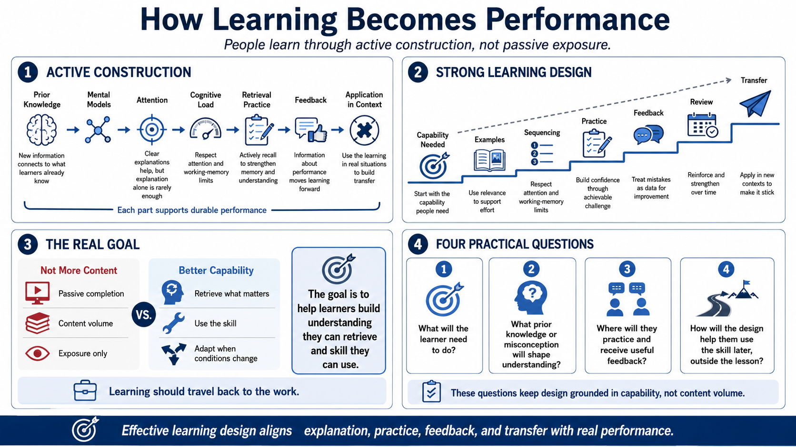

Course Summary and Key Takeaways
Connecting to LMS... Progress: in progress

Narration
The main lesson of this course is that people learn through active construction, not passive exposure. They connect new information to prior knowledge, refine mental models, focus attention, manage cognitive load, practice retrieval, receive feedback, and apply skills in context. Each piece supports the others. Clear explanations matter, but explanations alone are rarely enough to create durable performance.
Strong learning design is practical and structured. It starts with the capability people need, then builds a path toward that capability through examples, sequencing, practice, feedback, review, and transfer. It respects the limits of attention and working memory. It uses relevance to support effort. It creates confidence through achievable challenge rather than empty reassurance. It treats mistakes as data for improvement.
The goal is not to make learners consume more content. The goal is to help them build understanding they can retrieve and skill they can use. When a learning experience is aligned with real performance, learners are more likely to remember what matters, recognize when to use it, and adapt it when conditions change. That is the difference between a course that was completed and learning that actually travels back to the work.
As a practical takeaway, look at any learning experience and ask four questions. What will the learner need to do? What prior knowledge or misconception will shape how they understand it? Where will they practice and receive useful feedback? How will the design help them use the skill later, outside the lesson? Those questions keep the work grounded in capability rather than content volume.